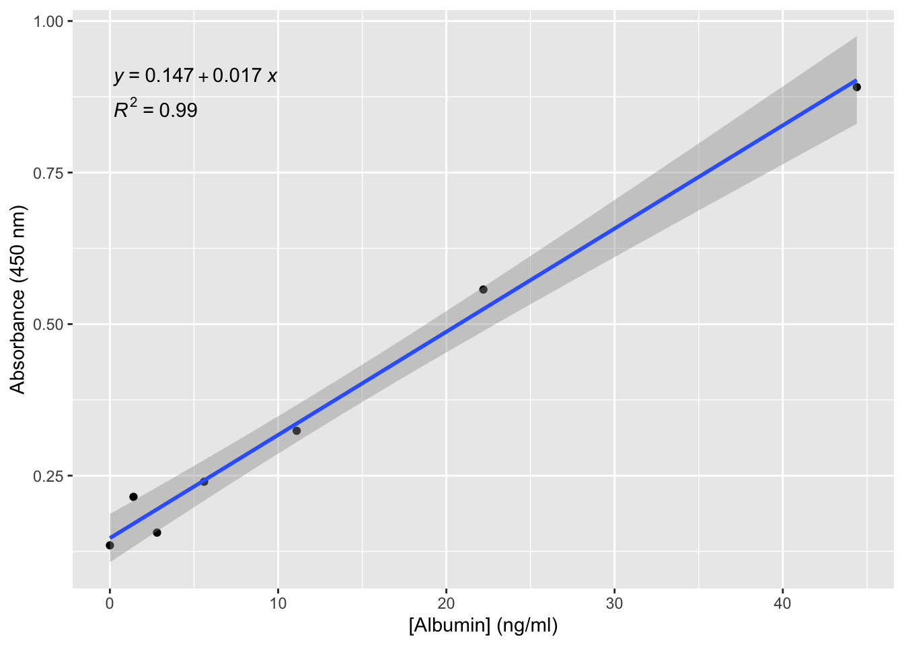
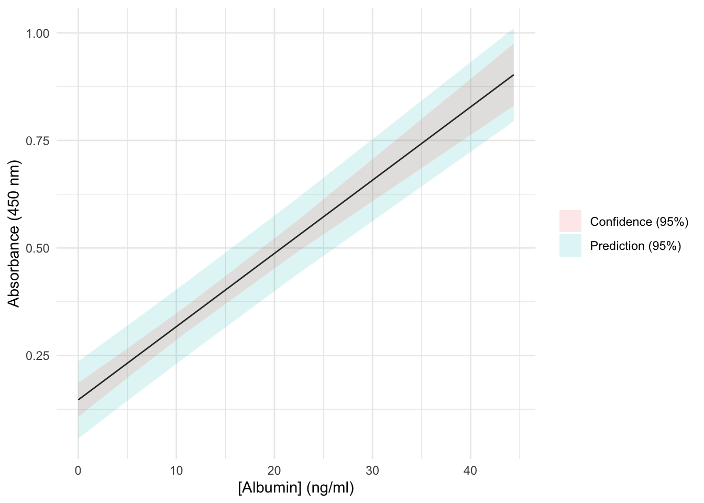

The aim of this guide is to show you how to calculate the Limit of Detection (LOD) and the Limit of Quantitation (LOQ) using R. For a detailed explanation of these terms, please see Armbruster and Pry 2008.
First, install the packages and load the libraries that we need.
── Attaching core tidyverse packages ──────────────────────── tidyverse 2.0.0 ──
✔ dplyr 1.1.4 ✔ readr 2.1.5
✔ forcats 1.0.0 ✔ stringr 1.5.1
✔ ggplot2 3.5.2 ✔ tibble 3.3.0
✔ lubridate 1.9.4 ✔ tidyr 1.3.1
✔ purrr 1.0.4
── Conflicts ────────────────────────────────────────── tidyverse_conflicts() ──
✖ dplyr::filter() masks stats::filter()
✖ dplyr::lag() masks stats::lag()
ℹ Use the conflicted package (<http://conflicted.r-lib.org/>) to force all conflicts to become errors
16.0.1 Getting the data
The sample data below is from an ELISA standard curve. You can read about this ELISA here. The absorbance was measured at 450 nm for seven known concentrations of albumin (ng per ml). The manufacturer claims that this kit “Detects albumin levels from 3.125 ng/ml)”. Lets see if our real student data compares with this. Load in the data below.
The chemCal package has a function for generating a plot of the calibration data with the 95% confidence limits.
#generate a graphcalplot(linear_model, xlab ="[Albumin] (ng/ml)", ylab ="Absorbance (450 nm)")

The two kinds of uncertainty bands around the calibration fitted line are 95% confidence and prediction bands (if you use the default settings). Confidence bands show the uncertainty in the estimate of the average response at each concentration of albumin (or other analyte) — how sure we are about the position of the calibration curve itself. These bands are relatively narrow as they only reflect uncertainty in the fitted regression line.
Prediction bands show the range where we expect new individual measurements to fall at a given concentration. They are always wider because they include not just the uncertainty in the calibration line but also the natural scatter of measurements around that line. Prediction intervals are crucial for LOD: they indicate how much a single absorbance reading could vary at low analyte concentrations, and therefore how confidently we can distinguish a true signal from background noise.
Here is the same plot generated with tidyverse functions, starting with the same linear model of the df dataset; you will need package broom to extract fitted and predicted values from the model object:
library(broom)# Confidence bandconfidence_df <-augment(linear_model, df, interval ="confidence") |>select(albumin_concentration, fitted = .fitted, conf_lower = .lower, conf_upper = .upper)# Prediction bandprediction_df <-augment(linear_model, newdata = df, interval ="prediction") |>select(albumin_concentration, pred_lower = .lower, pred_upper = .upper)# Combine the two datasetsplot_df <-full_join(confidence_df, prediction_df, by ="albumin_concentration")# Plot with both confidence and prediction intervalsplot_df |>ggplot() +aes(x = albumin_concentration, y = fitted) +geom_line() +geom_ribbon(aes(x = albumin_concentration, ymin = pred_lower, ymax = pred_upper, fill ="Prediction (95%)"), alpha =0.15) +geom_ribbon(aes(x = albumin_concentration, ymin = conf_lower, ymax = conf_upper, fill ="Confidence (95%)"), alpha =0.15) +labs(x ="[Albumin] (ng/ml)", y ="Absorbance (450 nm)", fill =NULL) +theme_minimal()

16.0.2 Calculating the Limit of Detection (LOD) (or minimum detectable value):
The LOD is the lowest amount of analyte (or signal) that can be reliably detected by a method. It is defined based on the probability of making a type II error — also known as a false negative. A type II error happens when the analyte is actually present, but the method fails to detect it. The probability of a false negative is given by ‘beta’ and has the default value of 0.05 (a 5% chance of a false negative).
The output gives a list of values, corresponding to the two axes. The LOD is normally stated in units of concentration (the x-axis). You can extract the albumin concentration from the list using the $ sign as below.
lod(linear_model)$albumin_concentration
[1] 8.122929
The units of this value are the same as the x-axis. So…
paste("Limit of Detection = ", round(lod(linear_model)$albumin_concentration, 2), #rounds to 2 d.p."ng/ml",sep =" ") # adds a space between each of the above
[1] "Limit of Detection = 8.12 ng/ml"
In the same way, you calculate the Limit of Quantitation using “loq”
paste("Limit of Quantitation = ", round(loq(linear_model)$albumin_concentration, 2), #rounds to 2 d.p."ng/ml",sep =" ") # adds a space between each of the above